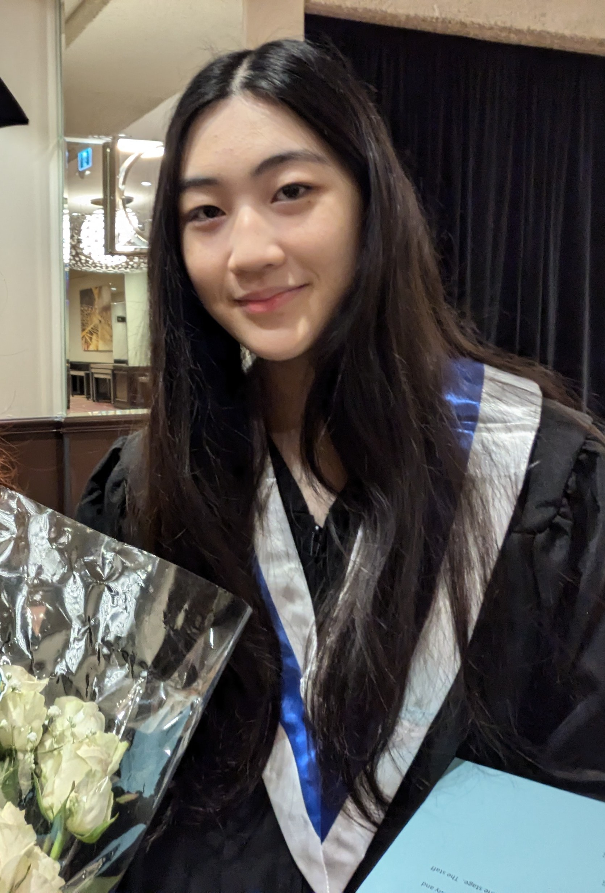

About Me
My name is Sophia Fan, and I was born in Toronto, ON to immigrant parents. My father named me Sophia since he knew it was usually associated with wisdom in Greece, which is a fun fact I didn’t know until recently. I was born on July 1st, 2006, making me 18 years old as of recently! I am a Chinese Canadian, though I must admit I know little about the culture from which I stem from. This is also the case for my little sister, who is 16 and turning 17 on the 7th of March. We have quite a bit in common, though we are more different than alike. Something we do share is our adoration for cats, finding ourselves spoiling and giving all the love we can to my two kittens. I am extremely passionate when it comes to discussing cats, and perhaps persuaded three of my friends into getting one, or two, themselves. I am also very much into film, which makes sense since I was in a specialized program for it in high school. Although I’m passionate and quite knowledgeable, I try not to be a snob, unlike most of my peers at the time, since belittling people and acting superior is one of my greatest pet peeves. I’d like to consider myself as a more gentle and calm person, who is more considerate yet not necessarily a people pleaser. My friends all consider me funny, which is something I pride myself on, though I know it is subjective. I’m also quieter than I’d like to be, though I am improving on it, especially since moving out and being on my own.
Hobbies!
- Painting 🎨
- Writing 📝
- Reading 📌
- Cooking 🥣
- Baking 🎂
From ages 3 to 12 I found myself with a lot of time. My mother put me in quite a variety of extracurriculars because of it, though most of them were some sort of art form. Whether it was performance art, traditional art, or instrumental, I was always partaking in more of a creative field. This led me to becoming one of the art kids
in primary school. Though I enjoyed this, I didn’t get much time to dabble in the more STEM-focused subjects. This didn’t help when I joined high school, where I was integrated into the CW program under the film arts department, leaving me even less time to try anything new. Though I adore art and want to pursue it in one way or another in my career, I do want to learn more about the STEM that goes into it. This is a part of the reason why I chose to go to Algonquin College rather than the select universities in Toronto: I have a desire to learn more about the capabilities within myself, and the skills I've held myself back from learning. To follow the quote:
I believe every human has a finite number of heartbeats. I don't intend to waste any of mine.-Neil Armstrong